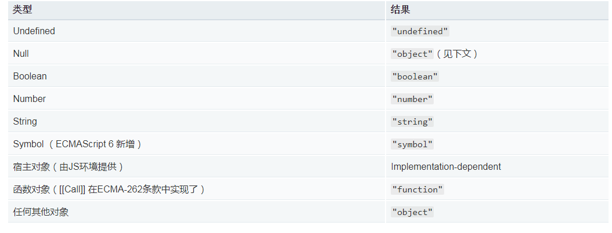

背景： 都知道js内置的类型检测，大多数情况下是不太可靠的，例如： typeof 、 instanceof
typeof 返回一个未经计算的操作数的类型， 可以发现所有对象都是返回object （null是空指针即空对象）

instanceof : 用于测试构造函数的prototype属性是否出现在对象的原型链中的任何位置 （简单理解： 左侧检测的对象是否可以沿着原型链找到与右侧构造函数原型属性相等位置） 后面会附上模拟方法。
缺点：
1、instanceof 与全局作用域有关系，[] instanceof window.frames[0].Array 会返回false，因为 Array.prototype !== window.frames[0].Array.prototype
2、Object派生出来的子类都是属于Obejct [] instanceof Array [] instanceof Object 都是true
instanceof 模拟实现：
1 function instanceOf(left, right) {
2 let leftValue = left.__proto__
3 let rightValue = right.prototype
4 console.log(leftValue,rightValue)
5 while (true) {
6 if (leftValue === null) {
7 return false
8 }
9 if (leftValue === rightValue) {
10 return true
11 }
12 leftValue = leftValue.__proto__
13 }
14 }
15
16 let a = {};
17
18 console.log(instanceOf(a, Array))
安全类型检测方法：
背景： 任何值上调用 Object 原生的 toString()方法，都会返回一个[object NativeConstructorName]格式的字符串。
NativeConstructorName ===> 原生构造函数名 (即是它爸的名字，并非爷爷（Object）的名字)
function isArray(value){
return Object.prototype.toString.call(value) == "[object Array]";
}
function isFunction(value){
return Object.prototype.toString.call(value) == "[object Function]";
}
function isRegExp(value){
return Object.prototype.toString.call(value) == "[object RegExp]";
}为啥直接用实例对象的toString方法不可以呢？ 这是因为在其他构造函数下，将toString方法进行了重写。 例如： [1,2].toString() ===> "1,2"